Feather Bake
This tool bakes NormalizedCrow's feather and fur shader to a normal unity mesh.
- Looks and works very close to the unbaked shader.
- Improves GPU preformance by 2-5x.
- Makes it work in fallback.
- Works with other shaders like Poiyomi.
- Export to other software like Blender.
Drawbacks/considerations before use:
- 2-4x mesh file size.
- Feathers now eat into the VRC polygon budget.
- Extra bake step needed after grooming.
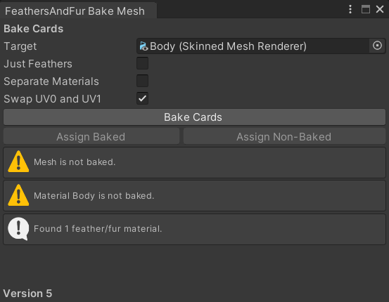
If you encounter bugs with the tool, or something not working right, feel free to poke @Torvid on telegram ^^. I can't guarantee 100% availability, but making the tool less buggy would be nice.
Download
FeathersAndFurBakeMeshV6.unitypackage
Baking
- In the top panel, Go to Tools->Torvid->FeathersAndFur Bake Mesh.
- Assign in your avatar's Skinned Mesh Renderer from the Scene.
- Click "Bake Cards" This generates a copy of the mesh and a new material with the shader swapped.
- Click "Assign Baked". This swaps out the mesh and material for the baked ones.
FBX Export
- In the top panel, Go to Tools->Torvid->Export FBX
- Install the required unity package if you don't already have it.
- In the window, assign in your avatar's Root Object from the Scene.
- Click Export!
poiyomi setup
- Set it to Cutout.
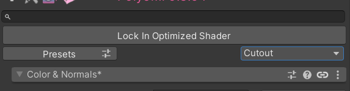
- Assign the feather mask in Alpha Map.
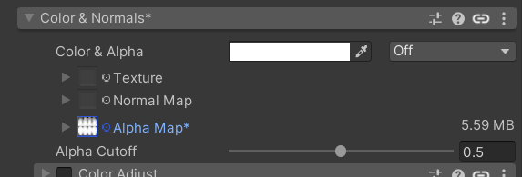
- Assign the base texture in Detail Texture and set it to UV1.
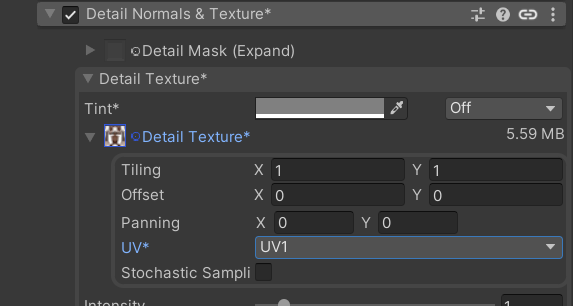
Quality, Technical details
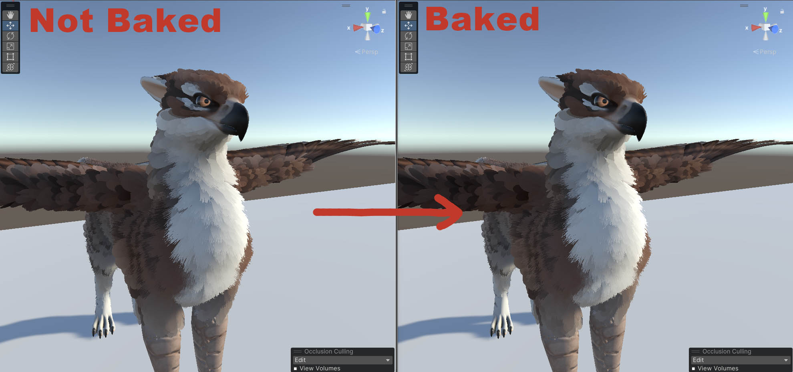
Fallback
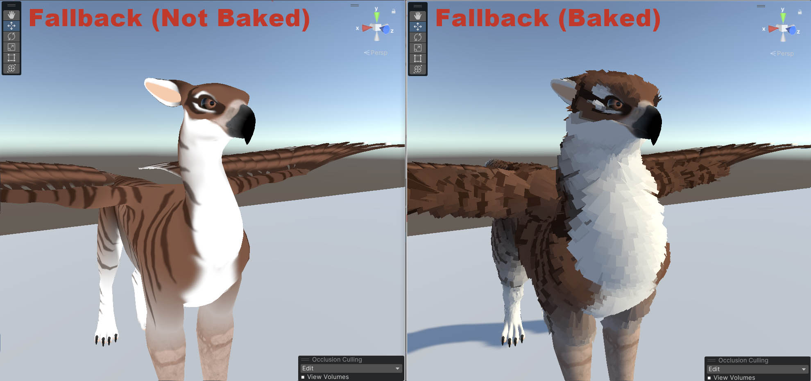
How it works
To extract the feathers, I modified the geometry shader so it outputs its data to a set of textures instead of drawing it to the screen like normal:
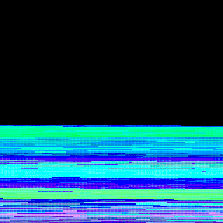
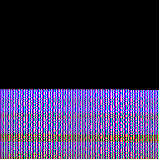
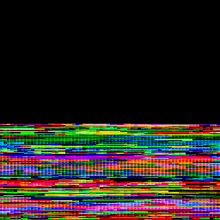
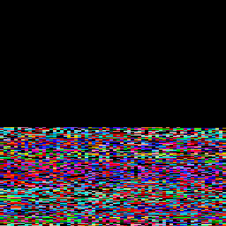
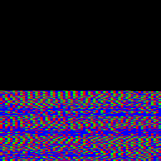
These data-textures are then read-back to the CPU and used to generate the baked mesh.
Barycentric coordinates for each feather is also extracted, so that skinning and blend shapes can be transferred. Basically each feather card knows exactly what triangle, and where on that triangle it sprouted from.
I tried really hard to get it to fall back with cutout and color correctly, but eventually gave up and let it fall back to VRChat's toonstandard.
The FBX exporter just calls into the one that comes with unity, so not much to say there really.
Performance
I did two tests, one close-up, and one further away.
Hardware: RTX 3060
Test 1, Close up: 25ms -> 5ms (~5x faster)
Test 2, Further away: 9.5ms -> 3.8ms (~2.5x faster)
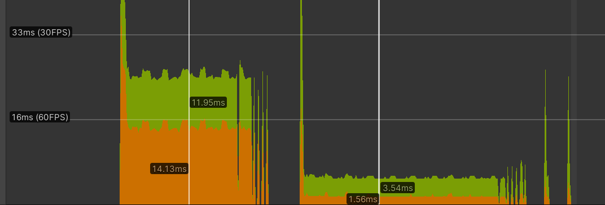
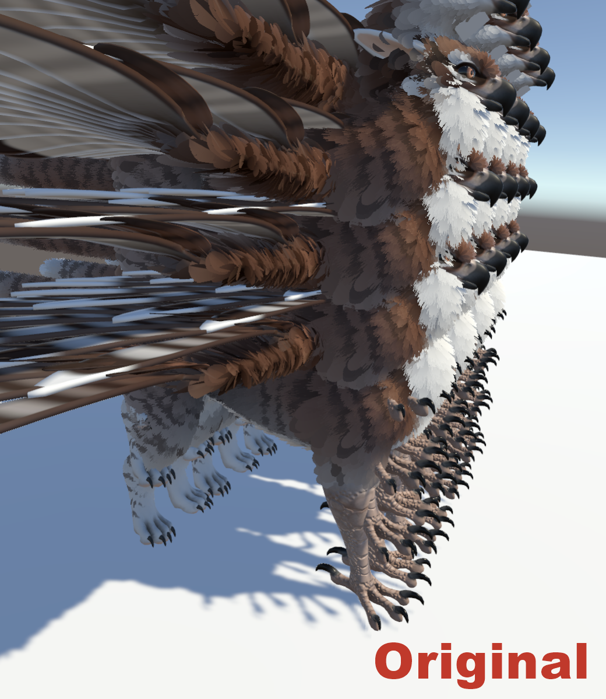
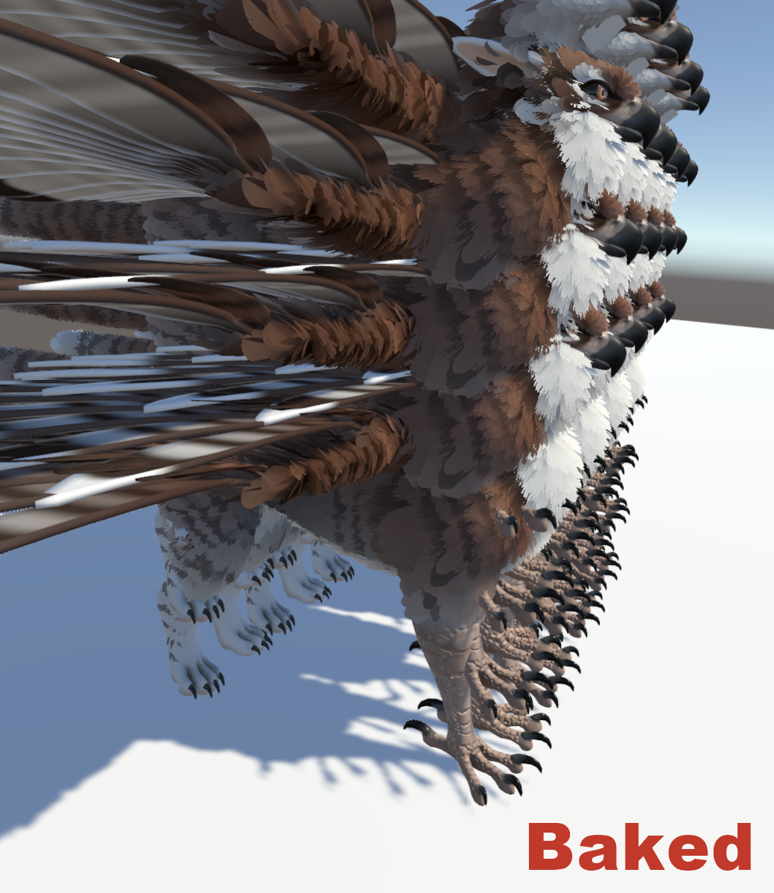
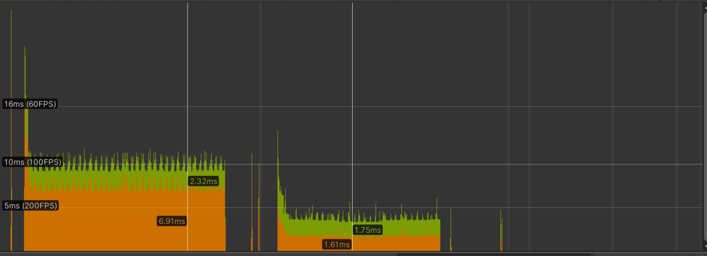
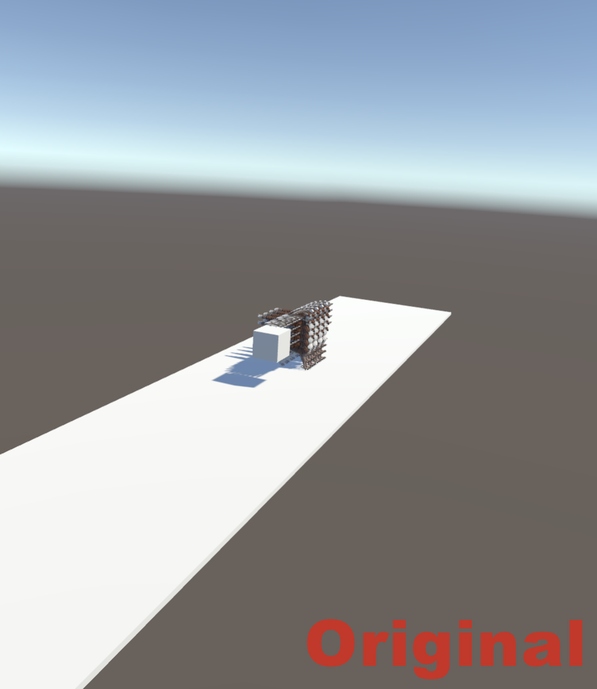
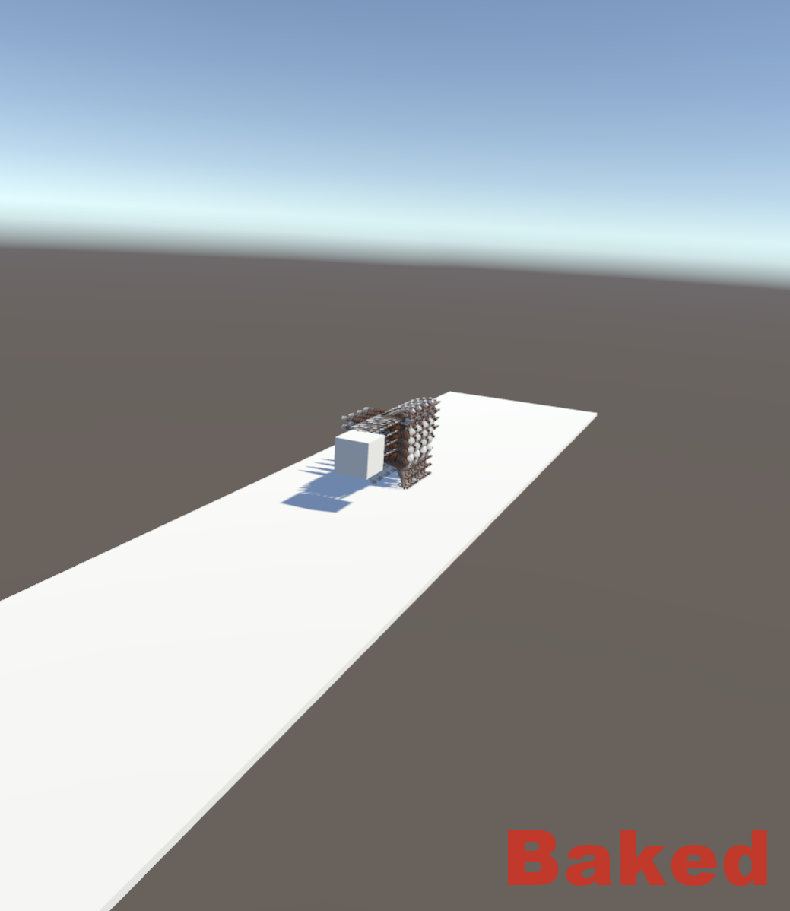
Old versions:
FeathersAndFurBakeMeshV4.unitypackage
FeathersAndFurBakeMeshV5.unitypackage
FeathersAndFurBakeMeshV6.unitypackage